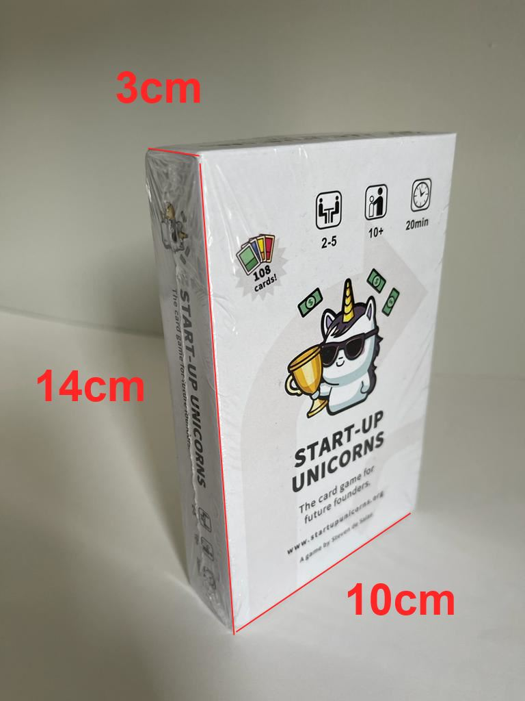
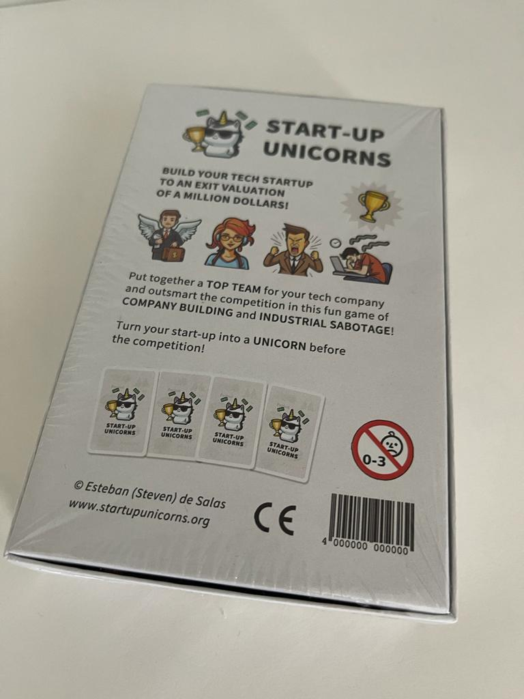
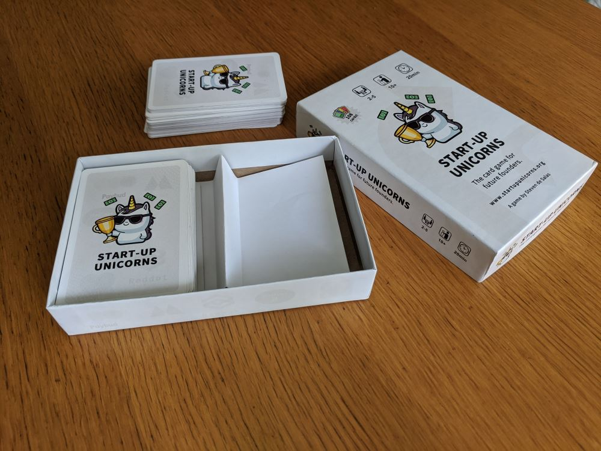
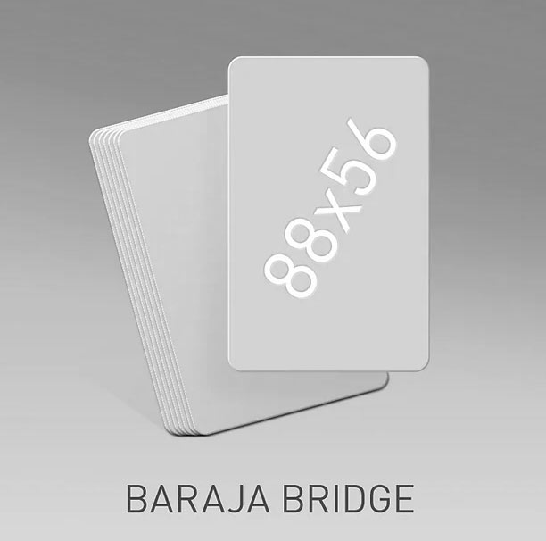
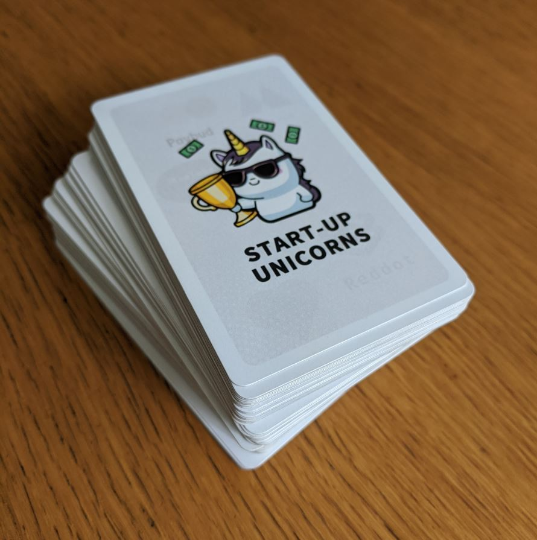
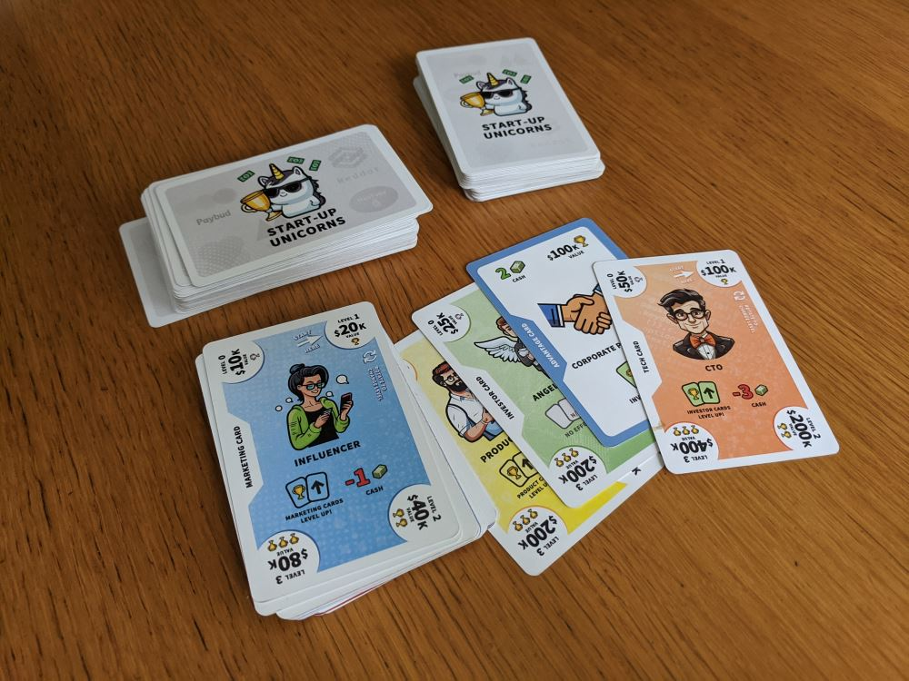
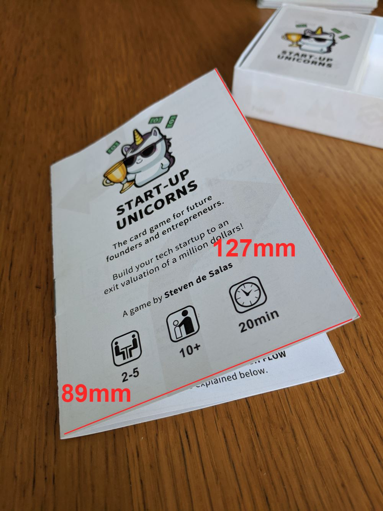
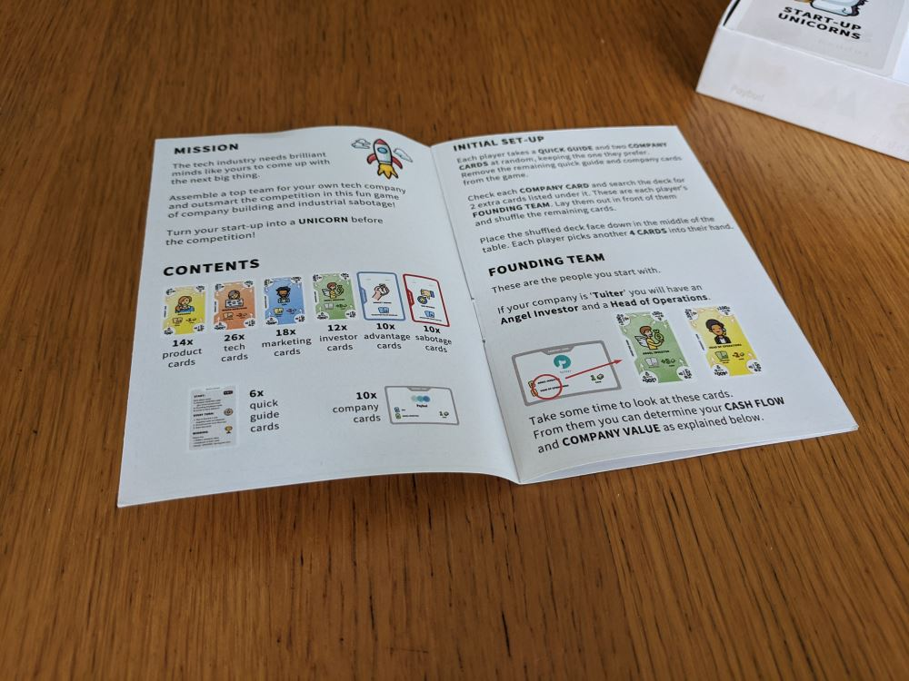
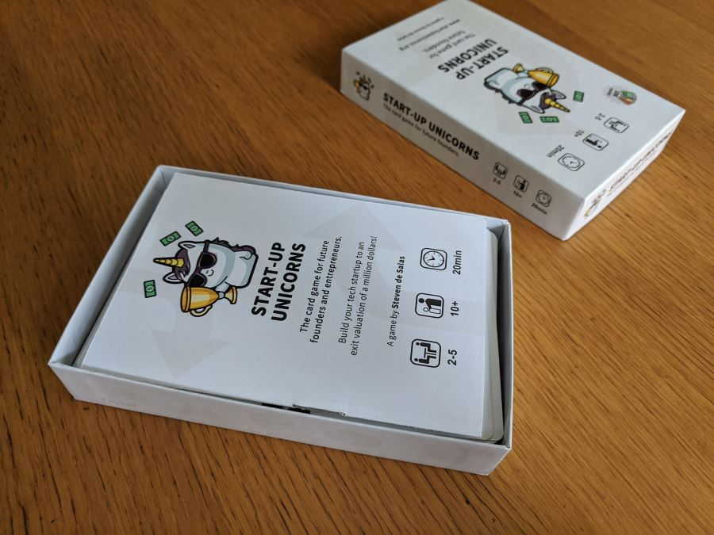
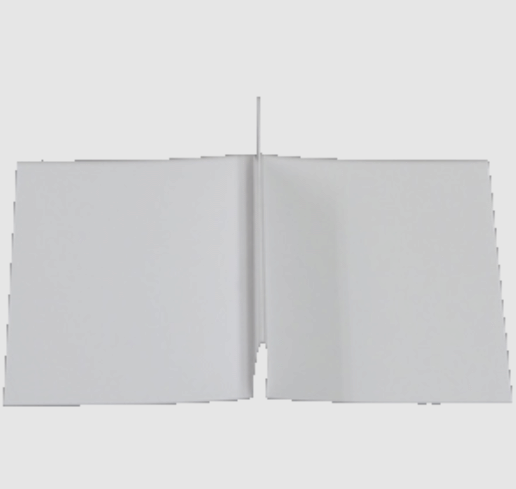

Para:
Esteban de Salas Gorospe 51076720E
Costa Brava 7, 28034 Madrid
Tlf: 655 024 669
Email: steven@desalasworks.com
Por favor si son tan amables de dar tiempos estimados de produccion.
Paperboard/Carton: 30pt / 620gsm / 1.5mm high density compact cardboard.
Paper/Papel: Glossy white / Blanco brillante 140 gsm
Exterior: 138 x 98 x 28mm
Interior: 130 x 90 x 25mm
Shrinkwrapped. Plastico termoretractil.
  320gsm black-core matte. En color. Doble cara esquinas redondas.
  Paper/Papel: 140gsm papel brillo doblado y grapado en medio
  Para separar 108 cartas en 2 tacos
Paperboard/Carton: 30pt / 620gsm / 1.5mm high density compact cardboard.
Color: Blanco.

Para aclarar cualquier duda no duden llamarme.
Muchas Gracias!!

Esteban de Salas
Movil: +34 655 024 669
Whatsapp: +61 498 665 304